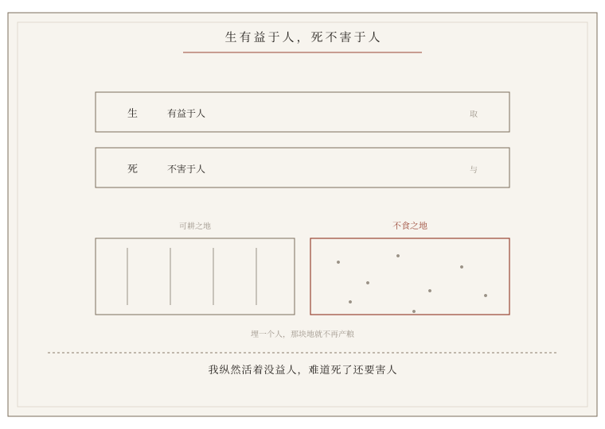

檀弓上 · 三·九十三 · 第 296 课
成子高寝疾。庆遗入，请曰：「子之病革矣，如至乎大病，则如之何？」子高曰：「吾闻之也：生有益于人，死不害于人。吾纵生无益于人，吾可以死害于人乎哉！我死，则择不食之地而葬我焉。」
说什么事：齐国大夫成子高卧病将死。族人庆遗进来问：您的病已经很重了，若到了那一步，该怎么办？子高说：我听说，活着要对人有益，死了不要害人。我纵然活着没给人益处，难道死了还要害人吗。我死后，就找一块不能耕种的地把我埋了。
落在哪一层：死不害人。论「葬地不与生者争食」。
为何编在此位：上二课论「余财当归」「再告为赘」，皆在辨「多出来的部分」。此课把同一把尺移到地上——死人的地方，不该占活人的口粮。
【经】成子高寢疾。慶遺入，請曰：「子之病革矣，如至乎大病，則如之何？」子高曰：「吾聞之也：生有益於人，死不害於人。吾縱生無益於人，吾可以死害於人乎哉！我死，則擇不食之地而葬我焉。」
【注】成子高，齊大夫國成伯高父也。觀其意。革，急也。遺，慶封之族。不食，謂不墾耕。
【疏】此一节论临死不忘俭之事。注「成子」至「父也」：知者，以其有「庆遗入请」，齐有庆氏，故知是齐大夫；齐有国子高，故知姓国。又见《齐世本》：「懿伯生贞孟，贞孟生成伯高父。」国氏以此知也。
成子高 齐国大夫，国氏，谥成，字（或号）子高。注谓「国成伯高父」。疏据《齐世本》推其世系。
寝疾 卧病。寝，卧；疾，病。
庆遗 齐国庆氏之族。注「庆封之族」。庆封为齐景公时权臣，后奔吴。
病革 病势危急。革，注「急也」。
大病 此指死。注「观其意」，谓庆遗问得委婉，其实问的是后事。
生有益于人，死不害于人 两句为子高所闻之旧语，非自造。
纵 纵然，即使。
不食之地 注「不垦耕」。即不能耕种、不产粮食的荒地、硗地、山石之地。
葬我焉 把我葬在那里。焉，于此。
成子高卧病将死。庆遗进来请示说：「您的病已经很重了，若到了那一步，该怎么办？」子高说：「我听说过：活着要能益人，死了不要害人。我纵然活着没能益人，难道死了还要害人吗。我死之后，就挑一块不能耕种的地把我埋了吧。」
此节的重量在「纵」字上。
子高不是圣人，他自己先说破了：「吾纵生无益于人。」——我这辈子没给人带来什么好处。这一句退，退得极干净：不辩功，不饰过，先把账认下。
然后才是「吾可以死害于人乎哉」。既然生前无益，死后就更不该有害。这个推论不是交换，是节制：不因为「我贡献少」而要求补偿，反因为「我贡献少」而更不肯占用。
「不食之地」四字最见分寸。他没有说「薄葬」，没有说「不封不树」，只说「别占能种粮的地」。子高之俭，俭在一个具体的对象上：活人的口粮。他要的不是自己节省，是不与生者争。
注只解三处：成子高是谁、革是急、不食是不垦耕。这三条注都在说明，此节没有隐喻，全照字面读。
第一层 丧葬占地是一种「害」 此节第一次把葬地的伦理说白了：地是有限的，能耕的地更有限。埋一个人，那块地就不再产粮。这不是抽象的道理，是每年少几石粟。子高把它算作「害人」，而且算得极直。
第二层 「纵」字的自我定位 先秦士大夫论生死，多称功业。子高反其道：先说己之无益。这不是自谦的套话，是为后面那句铺路——只有承认自己没给过，才配说「不该再取」。若生前有功，此语便成了居功之辞，反而轻了。
第三层 俭的对象化 「俭」在礼家常被说成品德，容易滑成一种自我形象。子高把它落在一条可验的线上：不占耕地。品德无凭，地亩有凭。这是《檀弓》记人的一贯手法——不记其言，记其可验之择。
第四层 与「藏」说的关系 下一课国子高（即此人）说「葬也者，藏也，欲人之弗得见也」。本课是他在病中的一次实践，下一课是他在论中的一次概括。同一人，一实践一理论，前后相邻，编者之意显然：先看他怎么死，再听他怎么讲。
与今日何干 今日之葬，争的是同一件东西：地。公墓、林地、耕地的界线，年年有争。子高那句「择不食之地」，在今天可以直译成一句规划语言：墓葬用地，不得占用基本农田。两千七百年，道理没换过，只是尺度换了。
| 左 | 右 |
|---|---|
| 寝疾 | 病将死 |
| 庆遗入请 | 问后事 |
| 病革 | 势急 |
| 生有益于人 | 上句 |
| 死不害于人 | 下句 |
| 纵生无益 | 先认己 |
| 择不食之地 | 所择者地 |
| 不垦耕 | 注之所限 |
画一处齐国大夫的寝室，视点自门内略高俯视。室中一具卧榻，榻上一位白发老者仰卧，被衾盖至胸。榻侧跪坐着一位士人（侧身、双手前伸作请问之状）。榻之另一侧，靠墙处置一张矮案，案上空无一物。窗外远处可见一片整齐的田垄（只画数道平行垄线，田里无禾）。不写文字、不画人面细节。赭色只用在榻上那床被衾的边缘一道，与窗外田垄尽头那一小片石砾地。
